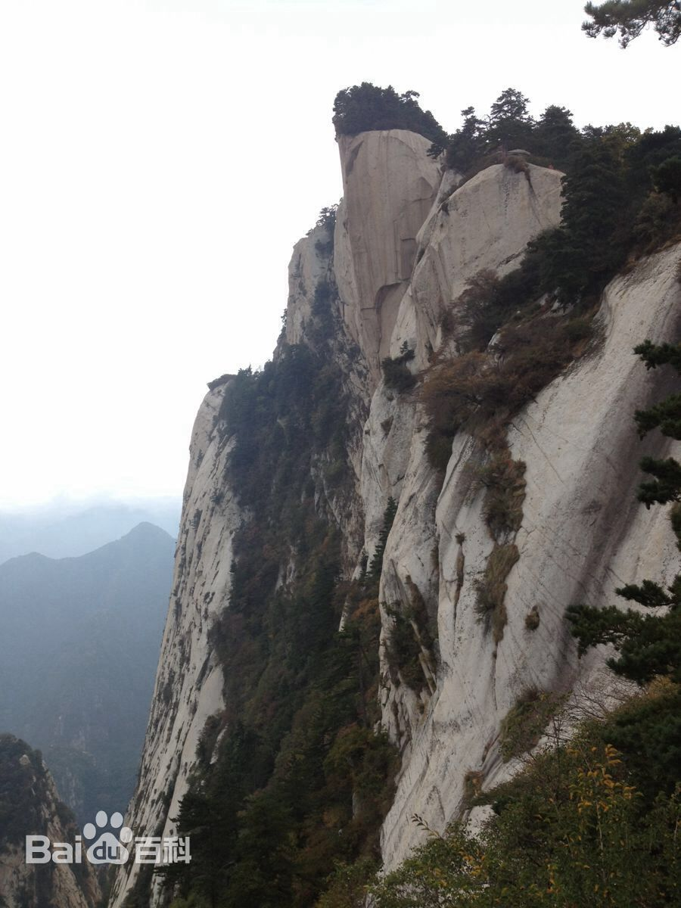
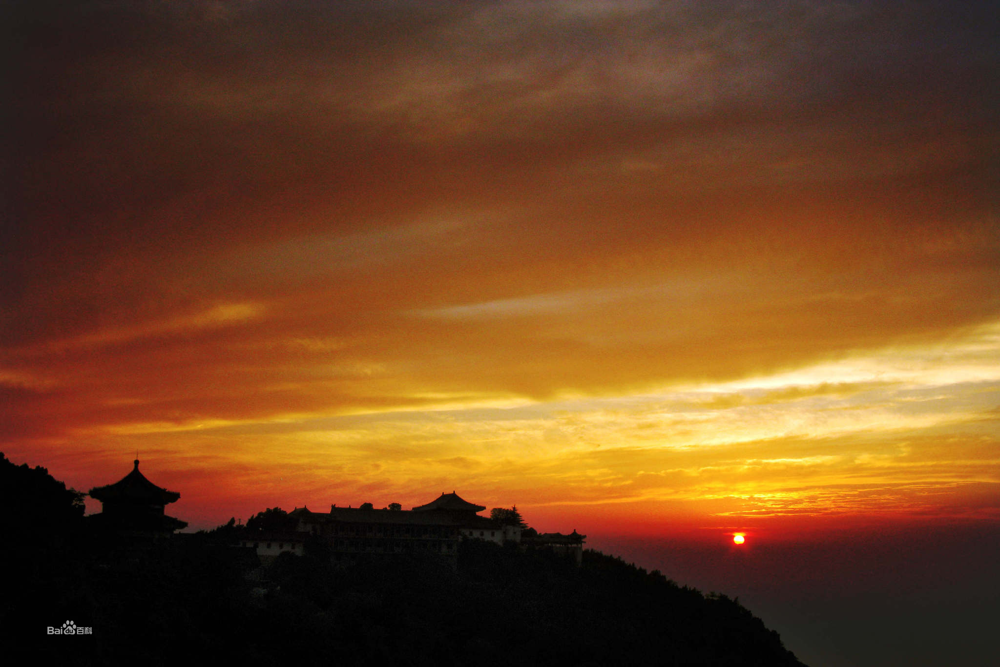
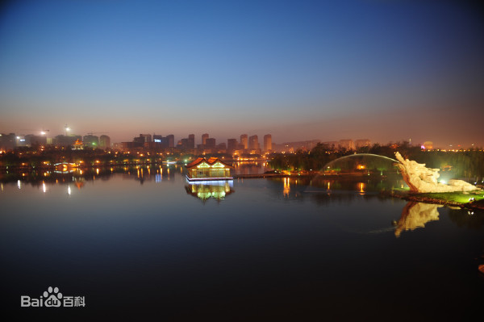
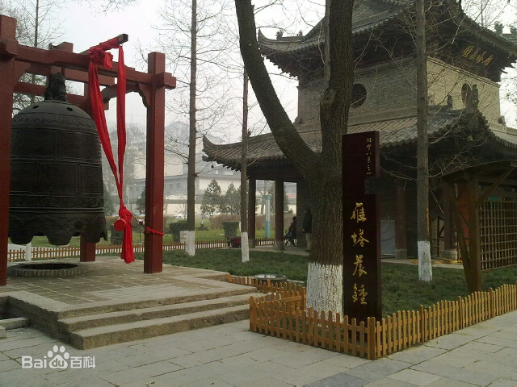
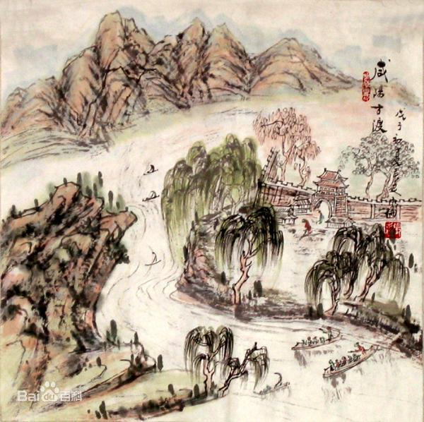
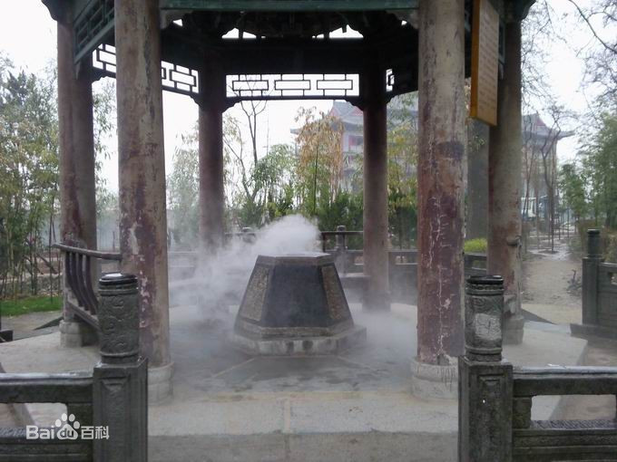
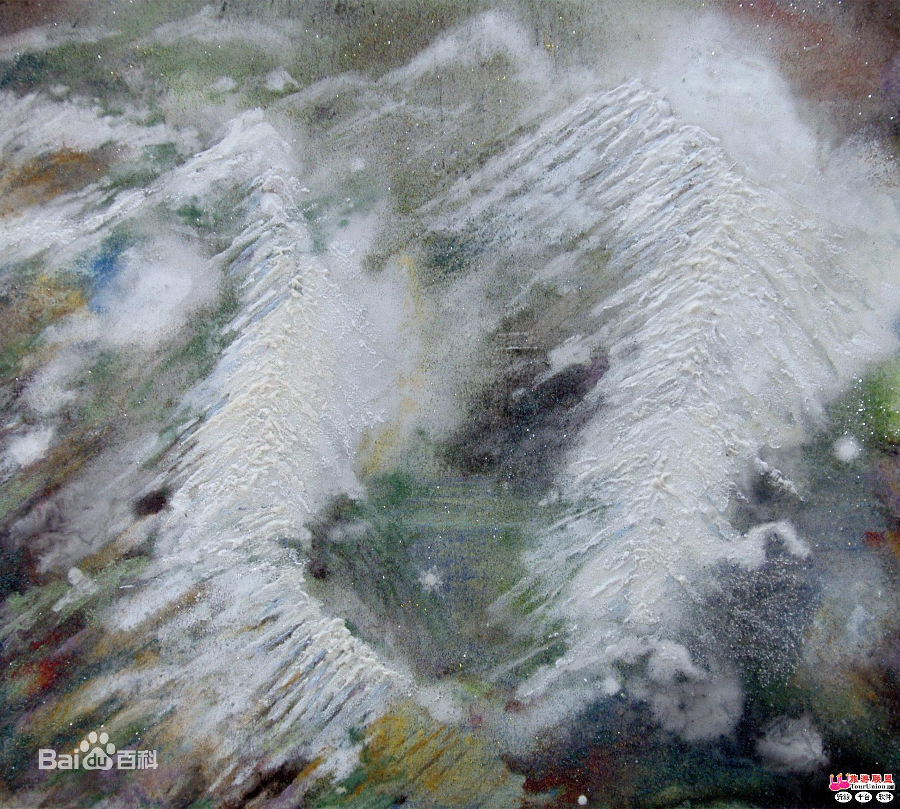

抽取你的缘分风景
华岳仙掌

西岳华山，是我国著名的五岳之一。位于陕西省华阴市城南，海拔2200米，秦、晋、豫黄河金三角交汇处，南接秦岭，北瞰黄河，“远而望之若花状”，故有其名。
仙掌崖在华山东峰，是指东石峰的面东崖壁。大自然的风剥雨蚀在崖上造化了一面手掌形石纹，高数十米，五指分明，形象生动逼真；人称华岳仙掌。因它的厅瑰壮观，被列为陕西有名的“关中八景”第一景。
华岳仙掌最宜从远处观赏。进潼关入陕西眺望秦岭，首先看到的就是它。每逢晴朗的早晨，掌印如镀赤金，巍然矗立，光彩壮丽，观赏者无不叹为观止。登山途中在苍龙岭，五云峰等 处也可近观仙掌，但效果不如远观。
骊山晚照

骊山，是我国古今驰名的风景游览胜地，因系西周时骊戎国国地，因此称为骊山，唐时临潼名昭应、会昌，骊山又曾因此改名为昭应山、会昌山。骊山位于西安临潼县城南，属秦岭山脉的一个支脉，东西绵亘25公里，南北宽约13.7公里，最高峰九龙顶海拔 1302.米，由东西秀岭组成，山势逶迤，山上松柏长青，壮丽翠秀，似一匹青苍的骊驹而得名。
骊山西绣岭到第三峰 (老君殿)的断层北麓处为一转折，由此向西南呈阶梯状延伸渐成缓坡。每当夕阳西下，回光返照，复经折射，楼殿亭台，崖壁幽谷，苍松翠柏，仿佛金光笼罩，各呈异彩，景色格外绮丽，有“骊山晚照”之美誉。清代诗人曾经赞美道:“丹枫掩映夕阳残，千壑万万崖画亦难。此时骊山真面目，人生能得几回看!”尤其深秋时节，满山红叶，更令人沉浸于“渭水秋天白，骊山晚照红”的诗情画意之中，“骊山晚照”因而名列“关中八景”之一。
灞柳风雪

“灞柳风雪”是隶属陕西省的著名民间俗景“关中八景”之一。在西安市的灞河（古称灞水）附近最为著名。西安市境内东有灞水，秦汉时曾在灞河上架有木桥，名曰“灞桥”，其位置在今灞桥镇西北方向5 公里处的上桥梓口村以西，灞水两岸多植柳树，每年到春天，灞桥两岸绿柳覆荫，柳絮漫天，飘飘扬扬，恰似春日里的一场雪，景况极美。
古桥石路半倾欹，柳色青青近扫眉。浅水平沙深客恨，轻盈飞絮欲题诗。这首诗描写的正是“灞柳风雪”的美景。
曲江流饮
曲江流饮：曲江池位于陕西省西安市南郊、距城约5公里。它曾经是我国汉唐时期一处极为富丽优美的园林。曲江池常年两岸楼台起伏、宫殿林立，绿树环绕，水色明媚。每当新科进士及第，总要在曲江赐宴。新科进士在这里乘兴作乐，放杯至盘上，放盘于曲流上，盘随水转，轻漂漫泛，转至谁前，谁就执杯畅饮，遂成一时盛事。“曲江流饮”由此得名。
雁塔晨钟
“雁塔晨钟”是清代“关中八景”之一。是指陕西省西安市城南荐福寺内的小雁塔及荐福寺钟楼内的古钟。荐福寺内小雁塔南面的钟楼上悬挂“雁塔晨钟”黑匾金字是2008年陕西著名书法家赵步唐题写。
咸阳古渡
咸阳古渡，即咸阳从古至今的渡口，本为汉唐西渭桥（即便门桥）旧址。咸阳，故址在今咸阳市东南里许。桥废后，至明嘉靖（1522-1565）年间，以舟为桥，后则冬春设桥，夏秋舟渡。通陇通蜀，欸乃之声，彻夜不息，为秦中第一大渡。咸阳古渡几千年，名闻遐尔。赞曰：往来名利之客，络绎不绝。沽舟泛泛，渔艇悠悠。黑鳗赤鲤，沉浮于绿水之中，白鹭青鸟，出没于烟波之上。樵士羊肠而往，牧童牛背而归。歌喧斗草，曲唱采莲。助诗家无限精神，是为一景。
草堂烟雾

神奇的“草堂烟雾”，出自于寺内的一口古井。古井在草堂寺的北院，这里林茂竹秀，幽静清雅，超凡脱俗。古井内经常出现的烟雾升腾的奇景，更给这里增添了一种神秘的色彩。
草堂寺位于西安市鄠邑区东南方草堂镇，它南对终南山的圭峰、观音、紫阁、大顶诸峰，景色秀丽。这里曾是佛教传入中国后的第一个国立译场。
据当地人传说，古井的井壁有一块石头，每当一条蛇卧于石上，就有一股白气从井中冉冉升起，在寺庙上空缭绕盘旋。关中八景之一的“草堂烟雾”即由此得名。现存于西安碑林的关中八景石碑上有清人朱集义诗一首生动描绘了这一奇景:“烟雾空蒙叠嶂生，草堂龙象未分明。钟声缥缈云端出 ， 跨鹤人来玉女迎。”
太白积雪
“太白积雪”被誉为关中八景之一，早在北魏郦道元 《水经注》里采录的古老传说中就有记载：“太白山南连武功山，于诸山最为秀杰，冬夏积雪，望之皑然。”这是“太白积雪”一词的最早出处。它指的是在过去寒冷的年代，山顶积雪终年不化，即便是三伏盛夏，仍然白雪皑皑、银光四射，景色格外壮观。清代朱集义在“关中八景”中对太白积雪曾这样描述：“白玉山头玉屑寒，松风飘拂上琅玕。云深何处高僧卧，五月披裘此地寒。”